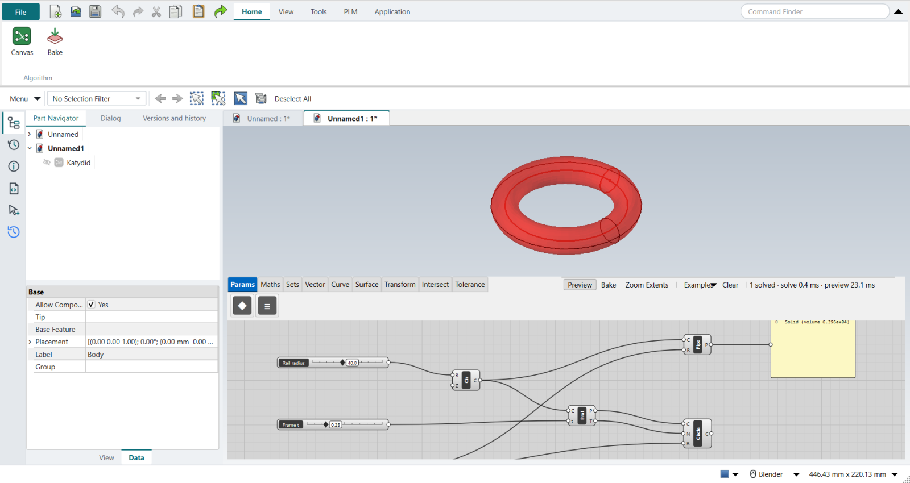
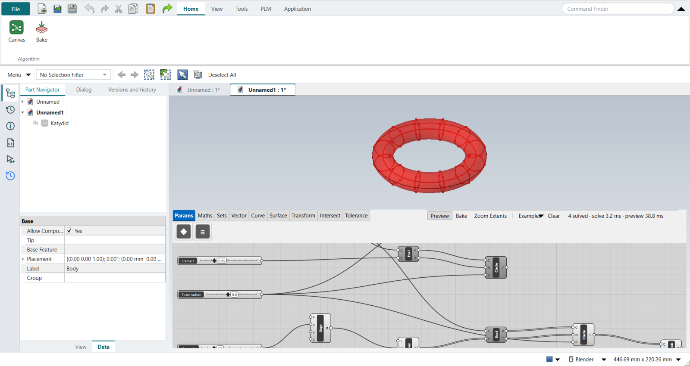
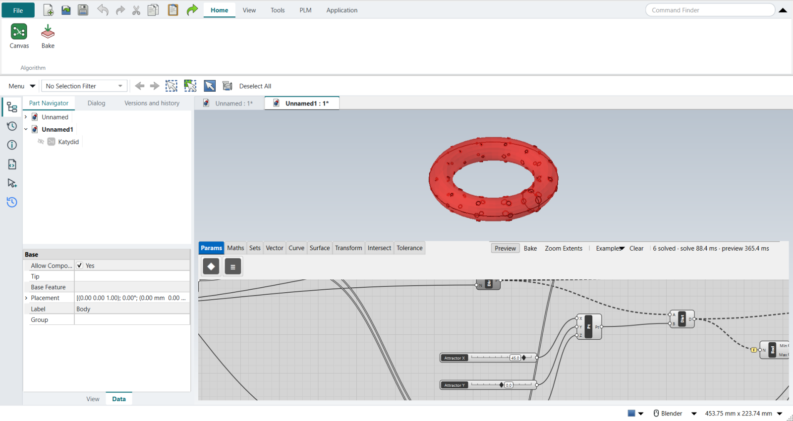

Tutorial R: Beginner masterclass, tube and attractor frames
| Video |
Rhino Grasshopper Tutorial (Beginner) (YouTube, channel Rhino Grasshopper), 54 minutes |
| Application |
Algorithmic Modeling (Katydid) |
| You learn |
Frames along a curve, sweeping a section, dividing a surface into panels, an attractor with Remap Numbers |
| Sizes |
Millimetres: a tube of radius 9 on a 40 mm rail, 12 × 6 panels, openings 0.6 to 2.6 in radius |
The masterclass leans on three plugins: Bifocals (labels), LunchBox (panels) and Weaverbird (mesh frames, subdivision, thickening). Katydid has no plugins and no mesh tools, so this page rebuilds what its own components can: the tube, the panel grid and openings that grow near an attractor. Each opening gets a frame ring, standing in for Weaverbird’s picture frames.
Step by step
1. Set-up
Plugin installation (File › Special Folders › Components Folder, Unblock) has no counterpart. Grasshopper’s Draw Fancy Wires is how Katydid always draws: solid for one item, double for a list, dashed for a tree of several branches.
2. The tube
-
Circle, a Rail radius slider (40): the rail.
-
Evaluate Curve at a Frame t slider (0 to 1): its point and tangent are the frame Grasshopper’s Perp Frame gives. Katydid’s t always runs 0 to 1, so there is nothing to Reparameterize.
-
Circle CNR (centre, normal, radius) with a Tube radius slider (9): the section on that frame.
-
Pipe sweeps it along the rail (the video’s Sweep 1; a round section is all Pipe needs). A Panel shows the result.
The tube’s volume is 63,955 mm³, 2π²Rr² for a torus.

3. The panel grid
The video divides the surface with Divide Domain² and IsoTrim (or LunchBox panels). Here U section circles stand along the rail (a Series of t values into Evaluate Curve and Circle CNR), and Divide Curve splits each into V points: the corners of 12 × 6 panels, all on the tube.

4. The attractor
-
A Construct Point with three sliders stands in for the MD Slider.
-
Distance from every corner to it.
-
Bounds, its input Flattened, gives the nearest and farthest.
-
Remap Numbers maps the distances onto the opening radii. Two sliders stand in for Construct Domain: Largest (2.6) into T0 and Smallest (0.6) into T1, so the nearest corner gets the largest opening.
5. The frames
-
A second ring of corners 3 mm further in (Expression
x - 3, Circle CNR, Divide Curve). -
Vector 2Pt from each corner to its inner twin: the opening’s axis.
-
Circle CNR with the remapped radii: the openings.
-
Pipe with a Frame width slider (0.45) turns each opening into a frame.
Drag the attractor sliders and the large frames follow it round the tube.

| Cutting real holes through a hollow tube was tried first and failed: in the GUI, a second Solid Difference on a Pipe-minus-Pipe wall came back invalid, while the same shapes cut cleanly once read back from a file. It is reported to Katydid. |
The replay
| # | In the book (NX) | In FreeCAD NX-Style | Result | Notes |
|---|---|---|---|---|
R1 |
Install Bifocals, LunchBox and Weaverbird (Components Folder, Unblock) |
- |
missing |
Katydid has no plugins: everything below uses its own components |
R2 |
Display > Draw Icons, Full Names, Fancy Wires |
- |
same |
Katydid always draws its wires 'fancy': solid for one item, double for a list, dashed for a tree of several branches |
R3 |
Circle rail; Perp Frame at t (Reparameterize: 0 to 1); a section Circle on that frame; Sweep 1 |
Circle (rail), Evaluate Curve at 'Frame t' (its point and tangent are the frame: Katydid’s t always runs 0 to 1), Circle CNR (centre, normal, radius) for the section; Pipe for the sweep; a Panel shows the result |
differs |
tube 63955 mm^3 (a torus, 2 pi^2 R r^2 = 63955). No Perp Frame or Sweep 1 component yet: a circle section swept along a rail is Katydid’s Pipe |
R4 |
Divide Domain2 into U x V; IsoTrim the surface into panels (or LunchBox Quad Panels) |
stand-in: U section circles along the rail (Series of t, Evaluate Curve, Circle CNR), each divided into V points: the corners of U x V panels |
missing |
72 panel corners, all on the tube (within 0.0000 mm). Katydid has no Divide Domain2, IsoTrim or panelling components yet |
R5 |
Mesh Surface; Weaverbird Picture Frame, Weld, Catmull-Clark (level 1-3), Thicken |
- |
missing |
no mesh components or Weaverbird counterpart in Katydid: the next step frames each opening with a ring instead of insetting mesh faces |
R6 |
Attractor: Evaluate Surface at an MD Slider’s uv; Closest Point distances; Bounds; Construct Domain; Remap Numbers into the opening sizes |
Construct Point with X/Y/Z sliders (no MD Slider yet); Distance from every panel corner; Bounds (input Flattened); Remap Numbers into 'Smallest' .. 'Largest' (two sliders for the target domain) |
differs |
72 opening radii from 0.6000000000000001 to 2.6 mm; the corner nearest the attractor gets 2.6 ('Largest' into T0, 'Smallest' into T1). Katydid has no MD Slider or Construct Domain yet |
R7 |
Graft the remapped sizes into Weaverbird’s Picture Frame distance: the openings grow near the attractor; Weld, Catmull-Clark and Thicken round and thicken the frames |
a second ring of corners 3 mm further in (Expression x - 3, Circle CNR, Divide Curve); Vector 2Pt from each corner to its inner twin as the opening’s axis; Circle CNR with the remapped radii; Pipe with a 'Frame width' slider makes each opening’s frame |
differs |
72 frames (72 valid solids) on the tube (centres within 1.6e-14 mm), openings 0.6 to 2.6 mm in radius, the largest nearest the attractor; drag the attractor sliders and they follow. Katydid has no mesh components: the frames are rings, not inset mesh faces |
R8 |
Deconstruct Brep, List Item and Aligned Dimension for live dimensions; Custom Preview colours |
- |
missing |
no drawing dimensions or preview colours on Katydid’s canvas yet |
R9 |
Right-click > Bake to a Rhino layer |
select the tube’s Pipe and the frames' Pipe + ribbon 'Home › Algorithm > Bake' |
same |
73 objects baked (the tube and 72 frames), 73 valid; FreeCAD has no layers here: they go into the Part Navigator |
| Result | Means |
|---|---|
same |
The book’s NX steps work as written. |
differs |
It works, but the FreeCAD way is different; the notes say how. |
limit |
The book’s way fails in FreeCAD itself; a workaround follows in the next steps. |
missing |
FreeCAD has no such function; a stand-in follows. |
skipped |
Not replayed; the notes give the reason. |
FAILED |
Did not work. |